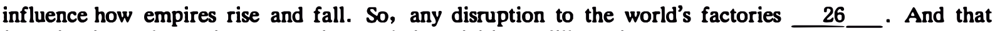
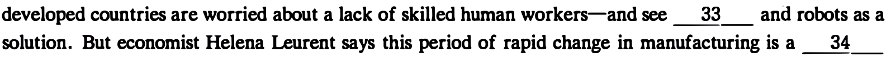
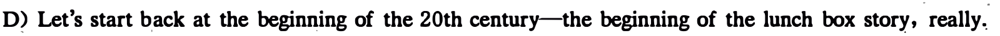
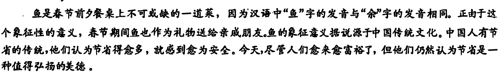

第 36 题 #
36. Lunch containers were not necessary for school kids in cities.
大学英语四级 · questions · 2020
题号和章节目录由结构化数据生成。选项按卷面字母顺序显示；原标记保留在 JSON 中。
本页部分文字层异常，已保留原图文字区域；这些区域随窗口缩放，暂不能重新换行或复制。
Directions: For this part, )OU are allowed 80 minutes to write on the topic Olanges in the Way of Communication. You should write at least 120 words but no more than 180. words.
Part ll Listening Comprehension (25 minutes)
Directions: In this section, there is a passage with ten blanks. You are required to select one K/{7;d for each blank from a list of choices given in a word bank following the ptmage. Read the 'passage through carefully 'before making )OUT choices. E:ach choice in the bank is identified by a letter. Please mark the oorresponding letter for each item on Answer Sheet 2 with a single line through the centre. You may not use any of the
The things people make, and the way they make them, determine how cities grow and decline, and

disruption is surely coming. Factories are being digitised, filled • with new sensors and new computers to make them quicker, more 27 , and more efficient.
Robots are breaking free· from the cages that surround them, learning new skills and new ways of working. And 3D printers have long 28 a world where you can make anything, anywhere, from a computerised design. That vision is 29 closer to reality. These forces will lead to cleaner factories, producing better goods at lower prices, personalised to our individual needs and desires . - Humans will be
life.
Greater efficiency 32 means fewer people can do the same work. Yet faciory bosses in many

opportunity to make the world a better place. "Manufacturing is the one system where you have got the biggest source of innovation, the biggest source of economic growth, and the biggest source of great jobs in the past. You can see it changing. That's an opportunity to 35 that system differently, and if we can, it will hdve tremendous significance."
本页部分文字层异常，已保留原图文字区域；这些区域随窗口缩放，暂不能重新换行或复制。
. . statement contains information given in one of the paragraphs . Identify the paragraph from which the informatio.n is derived. You may choose a paragraph more than once. Each paragraph is marked with a letter; Answer the questions by marking the corresJUlding letter on Answer Sheet 2.
A) It was made of shiny, bright pink plastic with a Little Mermaid sticker oo the front, and I carried it with me nearly every single day. My lunch box was one of my first prized possessions, .a proud statement to every:one in my kindergarten: "I love Mermaid-Ariel on my lunch box."
·B) That bulky container served me well through my first and second grades, until the live-action version of 101 Dalmatians hit theaters, and I needed the newest red plastic box with characters like Pongo and
C) Lunch boxes have been connecting kids to cartoons and TV shows and super-heroes for decades. But it wasn't always that way. Once upon a time, they weren't even boxes. As schools have changed in the past century, the midday meal container has evolved right along with them.
. .

. . While there were neighborhood schools in cities and suburbs, one-room schoolhouses were common in rural areas. As grandparents have been saying for generations, kids would travel miles to school in the countryside (often on foot).
E) "You had kids in rural areas who couldn't go home from school for lunch', so bringing your lunch wrapped in a cloth, in oiled paper, in a little wooden box or something like that was a very long standing rural tradition," says Paula Johnson, ·head of food history section at the Smithsonian National Museum of American History in Washington, D. C.
F) City kids, on the other hand, went home for lunch and came back. Since they rarely carried a-meal, the few metal lunch buckets on the market were mainly for tradesmen and factory workers.
G) After World War II, a bunch of changes reshaped schoolS,--:--and lunches. More women joined the workforce: Small schools consolidated into larger ones, meaning more students were farther away from home." And the National School Lunch Act in 1946 made cafeterias much ·more common. Still, there wasn't much of a market for lunch containers-yet. Students who carried their lunch often did so

thanks in ·large part to a genius move by a Nashville-based manufacturer, Aladdin Industries. The company already made square metal meal containers, the kind workers carried, and some had started to show up in the hands of school kids.
I) But these containers were really durable, lasting years on end. That was great for the consumer, not so much for the manufacturer. So executives at Aladdin hit on an idea that would harness the newf ound popularity of television. They covered lunch boxes with· striking red paint and added a picture of TV and radio cowboy Hopalong Cassidy on the front.
J) The company sold 600,000 units the first year. It was a major" Ah-ha!" moment, and a wave of other manufacturers jumped on board to capitalize on new TV shows and movies. "The Partridge Family,
本页部分文字层异常，已保留原图文字区域；这些区域随窗口缩放，暂不能重新换行或复制。
the Addams Family, the Six Million Dollar Man, the Bionic Woman-everything that was on television ended up on a lunch box," says Allen W,oodall. He's the founder of the Lunch Box Museum in Columbus, Georgia. "It was a great marketing tool because kids were taking that TV show to school
Woodall has more than 2,000 items on display. His favorite? The Green.Hornet lunch box, because he used to listen to the radio show back in the 1940s.
L) The new trend was also a great example of planned obsolescence, that is, to design a product so that it will soon become unfashionable or impossible to use and will need replacing. Kids would beg for a new lunch box every year to keep up with the newest characters, even if their old lunch box was perfectly_ . usable.
M) The metal lunch box craze lasted until the mid-1980s, when plastic took over. l\vo theories exist as to why. The first-and most likely-is that plastic had simply become cheaper. The second theory possibly an urban myth-is that concerned parents in several states proposed bans on metal lunch boxes, claiming kids were using them as "weapons" to hit one another. There's a lot on the internet about a state-wide ban in Florida, but a few days worth of digging by a historian at the Florida State Historical Society found no such legislation. Either way, the metal lunch box was out.
N) The last few decades have brought a new lunch box revolution, of sorts. Plastic boxes changed to lined cloth sacks, and eventually, globalism brought ti.ffin containers from India and bento boxes from Japan. Even the old metal lunch boxes have regained popularity. "I don't think the heyday (dJ;Jle,J-JIJJ) -has passed," says D. J. Jayasekara, owner and founder of lunchbox. corn, a retailer in Pasadena, California. "I think it has evolved. The days of the ready-made, 'you stick it in a lunch box and carry it to school' are kind of done."
0) The introduction of backpacks changed the lunch box scene a bit, he adds. Once kids started carrying
in a backpack," Jayasekara says. "It still has to go into a container." That is, in part, why smaller and softer containers have taken off-they fit into backpacks. P) And don't worry-whether it's a plastic bento box or a cloth bag, lunch containers can still easily be covered with popular culture. "We keep pace with the movie industries so we can predict which characters are going to be popular for the coming months," Jayasekara says. "You know, kids are kids."
36. Lunch containers were not necessary for school kids in cities.
37. Putting TV characters on lunch boxes proved an effective marketing strategy.
38. Smaller lunch boxes are preferred because they fit easily. into backpacks.
39. Lunch boxes have evolved along with the transformation of schools.
40. Around the beginning of the nineteen fifties, some school kids started to use metal meal containers.
41. School kids are eager to get a new lunch box every year to stay in fashion.
42. Rural kids used to walk a long way to school in the old days.
43. The author was proud of using a lunch box in her childhood.
44. The most probable reason for the popularity of plastic lunch boxes is that they are less expensive.
45. The durability of metal meal containers benefited consumers.
本页部分文字层异常，已保留原图文字区域；这些区域随窗口缩放，暂不能重新换行或复制。
Directions: There are 2 passages in this section. Each passage is followed by some questions or unfinished statements. For each of them there are four choices marked A), B), C) and D). You should decide on the beJ't choice and mark the co"esponding letter on Answer Sheet 2 with a single line through the centre. Pas,ageOne
Questions 46 to 50 are based m the following pmage.
A growing number of U.S. bike riders are attracted to electric- bikes for convenience, health benefits and their fun factor. Although ebikes first appeared in the 90s, cheaper options and longer-lasting batteries are breathing new life into the concept.
Established bike • companies and startups are embracing ebikes to meet demand. About 34 million ebikes were sold worldwide last year, according to data from eCycleElectric Consultants. Most were sold in Europe and China, where the bikes already have exploded in popularity. Recently, the U.S. market has grown to 263,000 bikes, a 25% gain from the prior year.
The industry is benefiting from improved batteries as suppliers over the years developed technology for laptops, smartphones and electric cars. In 2004, the price of batteries used on ebikes fell, spurring European sales.
But lower cost options are emerging, too. This month, three U.S. bikeshare companies, Motivate, LimeBike and Spin, announced electric bicycles will be added to their fleets. New York-based Jump Bikes is already operating an electric bikeshare in Washington, D. C., and is launching in San Francisco Thursday. Rides cost $ 2 for 30 minutes.
The system works like existing dockless bikeshare systems, where riders unlock bikes through a smartphone app. "This is the beginning of a long-term shift away from regular pedal to electric bikes," said Jump Bikes CEO Ryan Rzepecki. "When people first jump on an ebike, their face lights up. It's exciting and joyful in a way that you don't get from a regular bike."
Two years ago, CEO Chris Cocalis of Pivot Cycles, which sells high-end mountain bikes, found that U.S. bike shops weren't interested in stocking ebikes. Some retailers warned Cocalis that they'd drop the brand if it came out with an electric bike.
Now that sales are taking off, the vast majority of bike dealers are asking Cocalis when he'll make an ebike available. •"There's tremendous opportunity to get a generation of people for· whom suffering. isn't their thing," Cocalis said. "Ebike riders get the enjoyable part of cycling without the massive suffering of climbing huge hills. "
46. What do we learn from the passage about ebikes?
47. What brought about the boost in ebike sales in Europe at the beginning of the century?
48. What is the prospect of the bike industry according to Ryan Rzepecki?
49. What prevented Chris Cocalis from developing ebikes sooner?
50. What makes Chris Cocalis believe there is a greater opportunity for ebike sales?
Questions Sl to SS are based on the following pas.,age.
The terms "global warming" and "climate change" are used by many, seemingly interchangeably. But do they really mean the same thing?
Scientists shaped the history of the terms while attempting • to accurately describe how humans continue to alter the planet. Later, political strategists adopted the terms to influence public opinion.
In 1975, geochemist Wallace Broecker introduced the term "climate change"· in an article published by Science. In 1979, a National Academy of Sciences report used the term "global warming" to define increases in the Earth's average surface temperature, while "climate change" more broadly referred to the numerous effects of this increase, such as sea-level rise and ocean acidification (酸化).
During the following decades, some industrialists and politicians launched a campaign to sow doubt in the minds of the American public about the ability of fossil-fuel use, deforestation and other human activities to influence the planet's climate.
Word use played a critical role in developing that doubt. For example, the language and polls expert Frank Luntz wrote a memo encouraging the use of "climate change" because the phrase sounded less scary than "global warming," reported the Guardian.
However, Luntz's recommendation wasn't necessary. A Google Ngram Viewer chart shows that by 1993 climate change was already more commonly used in books than global warming. By the end of the next decade both words were used more frequently, and climate change was used nearly twice as of ten as global warming.
NASA used the term "climate change" because it more accurately reflects the wide range of changes to the planet caused by increasing amounts of greenhouse gases in the atmosphere.
The debate isn't new. A century ago, chemist Svante Arrhenius started one of the first debates over the potential for humans to influence the planet's climate. Arrhenius calculated the capability of carbon dioxide to trap heat in the Earth's atmosphere, but other chemists disagreed. Some argued that humans weren't producing enough greenhouse gases, while others claimed the effects would be tiny. Now, of
本页部分文字层异常，已保留原图文字区域；这些区域随窗口缩放，暂不能重新换行或复制。
course, we know that whatever you call it, human behavior is warming the planet, with grave consequences ahead.
51. Why did politicians use the two terms "global warming'' and "climate change"?
52. As used in a National Academy of Sciences report, the term "climate change" differs from "global warming'' in that __ _
53. What did industrialists of the late 20th century resort to in order to mislead Americans?
54. Why did NASA choose the term "climate change"?
55. What is the author's final conclusion?
Directions: For this part , yo.u are allowed 80 minutes to translate a passage from Chinese into English. You should write yo.ur answer on .Answer Sheet 2 .
